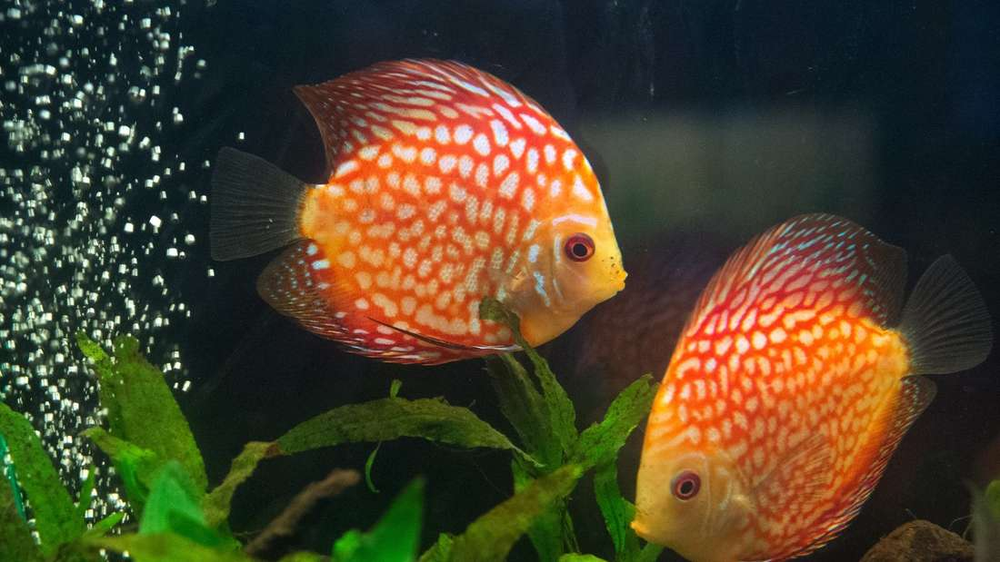

Diskusbuntbarsch
Der Diskusbuntbarsch ist ein beliebter Süßwasserzierfisch, der durch seine auffällige Farbe auf sich aufmerksam macht.

Diskusbuntbarsch
- Aussehen: Kreisrunde, von den Seiten stark abgeflachte Scheibenform; extrem farbenfroh (Blau, Rot, Türkis) in vielen Mustern
- Vorkommen: Südamerika (Amazonasbecken) in ruhigen, langsam fließenden Uferzonen und Überschwemmungsgebieten
- Aquarium: Ab 120–150 cm Länge (mind. 300–450 Liter);
Wassertemperatur sehr warm (ca. 28–31 °C);
Gruppe ab 6 Tieren; große Wurzeln und viel Schwimmraum - Nahrung: Fleisch- und Allesfresser (Hochwertiges Diskus-Granulat, Frost- und Lebendfutter wie Artemia oder Mückenlarven)
Meine Bewertung
⭐⭐⭐
Zurück zur Übersicht
Hier klicken